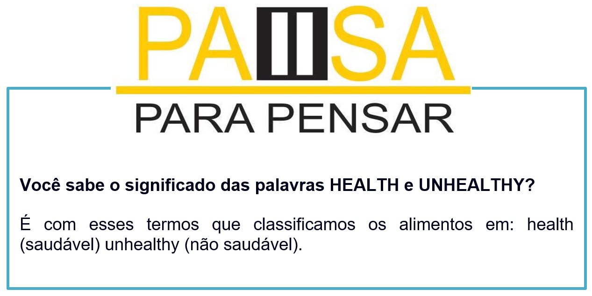

Capítulo 5: Industry Food – Indústria Alimentícia
Nessa unidade vamos trabalhar o setor alimetício, vamos iniciar com a análise do infográfico sobre a obesidade, que é uma doença comum nos Estados Unidos.
As comidas de fast food são chamada de JUNK FOOD (comida lixo) devido ao malefício à saúde. Vamos analisar o vocabulário:
People – pessoas
Calories – calorias
Overweight – obesidade
Child – criança
Para evitar owerweight , há dicas de como comer fast food de forma mais consciente.
Tips when dining at a fast food restaurant – Dicas quando jantar em um restaurante de fast food
Ask for the nutritional content. Know what you are eating. > Pesquise os nutrientes do que vai comer. Conheça o que vai comer.
Choose salads and grilled foods whenever possible. > Escolha saladas e grelhados quando possível.
Keep portion sizes small. > Pegue porções pequenas
Para saber mais
Os alimentos têm suas embalagens e unidades de medidas. Observe os principais

Lista de alimentos – List of food
Rice – arroz
Cheese – queijo
Meat – carne
Chicken – frango
Fish – peixe
Oil – óleo
Butter – manteiga
Sugar – açúcar
Pepper - pimenta
Fruits = frutas
Apple – maçã
Orange – laranja
Lemon – limão
Banana – banana
Tangerine – mexerica
Grapes – uvas
Pineapple – abacaxi
Pear – pêra
Apricots – damasco
Peaches – pêssego
Strawberries – morango
Raspberries – amora
Honeydew melon- melão
Avocado – abacate
Papaya – mamão
Mango – manga
Kiwi – kiwi
Watermelon – melancia
Figs – figo
Prunes – ameixa preta
Guava – goiaba
Cashew nut – caju
Coconut – coco
Vegetables = vegetais
Tomato – tomate
Potato – batata
Pepper – pimentão
Beans – vagem ou feijão
Peas – ervilha
Carrots – cenoura
Cabbage – couve ou repolho
Broccoli – brócolis
Cauliflower – couve-flor
Garlic - alho
Leeks – alho poró
Cucumbers – pepino
Corn – milho
Lettuce – alface
Eggplant – beringela
Celery – aipo
Onion – cebola
Drinks = bebidas
Water – água
Coffee – café
Tea – chá
Juice – suco
Milk – leite
Soda - refrigerante
Reconstruindo o conhecimento – Preposições de tempo e lugar: in, on, at
As preposições de tempo
As principais preposições são: at, in, on entre muitas outras. Elas têm um grau de especificidade, enquanto o IN sugere uma informação mais vaga, genérica, o AT é mais preciso. O ON fica em meio termo.
O IN é usado quando queremos dizer que uma coisa está contida em outra (dentro de, em):
> She is studying in England, at the University of Cambridge (Ela está estudando na Inglaterra, na Universidade de Cambridge).
> The car is in the garage (o carro está [dentro] da garagem)
- The book is on the table (o livro está na [em cima] da mesa)
Note no primeiro exemplo, que o IN dá uma informação mais genérica (um país), enquanto o AT especifica mais o local (uma universidade).
O At também pode significar que se está EM, não necessariamente dentro:
> I'm at home (estou em casa)
>The dog jumped at my face (o cachorro pulou em meu rosto)
O ON significa "em cima de", "sobre":
> He left the wallet on the table (ele deixou a carteira na [em cima da] mesa)

Na dica da biblioteca vamos ver como usar o inglês no supermercado nos Estados Unidos. Comidas, bebidas e expressões sobre essa temática. Assista ao vídeo e divirta-se!
Quadro resumos das preposições
O que aprendi
• Nesta unidade aprendemos o vocabulário do setor alimentício;
• Vimos às expressões usadas com os alimentos;
• Aprendemos a diferenciar os tipos de comidas e os malefícios dela;
• Na parte gramatical estudamos as preposições de tempo e lugar: in, on, at.
Praticando
What do you eat? O que você come? Breakfast, lunch, dinner. Faça um cardápio ideal para seu dia.
Breakfast – café da manhã
Lunch – almoço
Dinner – jantar
Analise a pirâmide das preposições. Você seria capaz de identificar os usos de cada preposição? Pesquise em nosso material e monte os conceitos das preposições.
IN ou ON? Observe a imagem e diga qual preposição correta para cada situação.